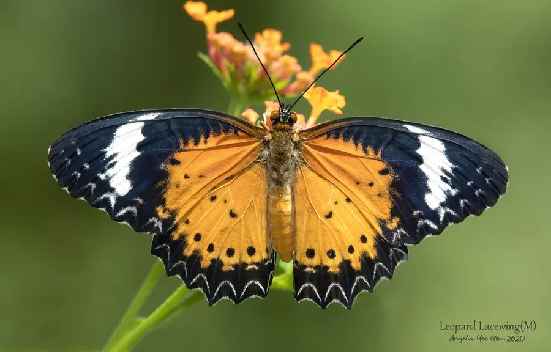

昆虫 · 动物界
白带锯蛱蝶 Cethosia cyane

翅缘呈锯齿状、翅面橙红带黑色斑纹的蛱蝶，翅腹面有白色宽带，幼虫取食西番莲，是热带常见的观赏蝶。
- 分类
- 门节肢动物门纲昆虫纲目鳞翅目科蛱蝶科属锯蛱蝶属
- 栖息环境
- 热带、亚热带林缘、灌丛与花园，西番莲生长处
- 地理分布
- 中国南方、东南亚和南亚
- 保护级别
- 暂无评估
物种志
白带锯蛱蝶翅展约 7–9 cm，雄蝶翅面橙红色，前翅端部黑色并带白斑，后翅边缘有黑色齿状纹，翅缘呈锯齿状，因此称锯蛱蝶；翅腹面有白色宽带和复杂的图案，停歇时像一片带花纹的叶子。雌蝶翅色较淡，以黄褐为主。
它生活在热带和亚热带林缘、灌丛和花园，成虫飞行优雅，喜欢访花。雌蝶把卵产在西番莲等西番莲科植物上，幼虫取食叶片，身体带刺毛，化蛹后挂在藤蔓上。白带锯蛱蝶分布于中国南方、东南亚和南亚，是蝴蝶园和生态摄影中常见的种类，幼虫寄主西番莲也是热带常见的藤本植物。它的蛹像一片卷曲的枯叶，挂在西番莲藤蔓上，伪装效果很好，很难被发现。
形态与习性
- 食性幼虫取食西番莲等西番莲科植物；成虫吸蜜
- 翅展约 7–9 cm
- 识别翅缘呈锯齿状，翅腹面有白色宽带
- 生活史卵产于西番莲叶片，幼虫带刺毛
- 分布中国南方、东南亚和南亚
趣味知识
- 白带锯蛱蝶的翅膀边缘呈锯齿状，因此得名锯蛱蝶。
- 它停歇时翅腹面的白带和花纹，看起来像一片带图案的叶子。
- 幼虫专吃西番莲的叶子，身体上长满小刺毛。